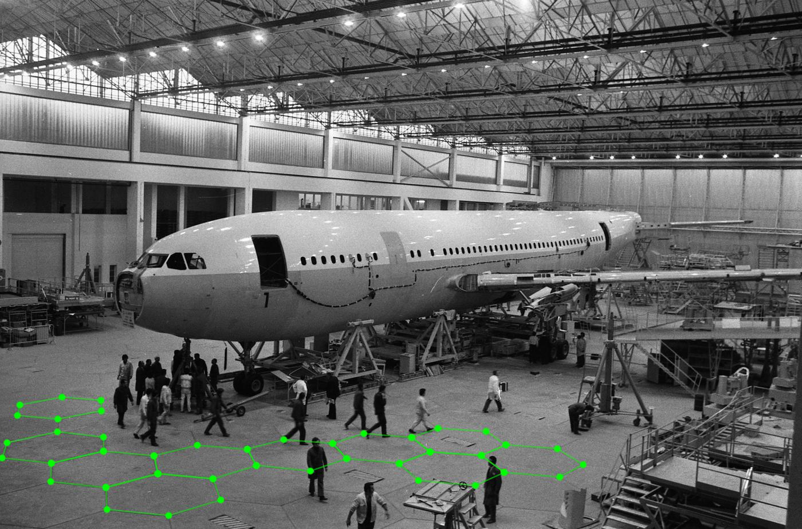
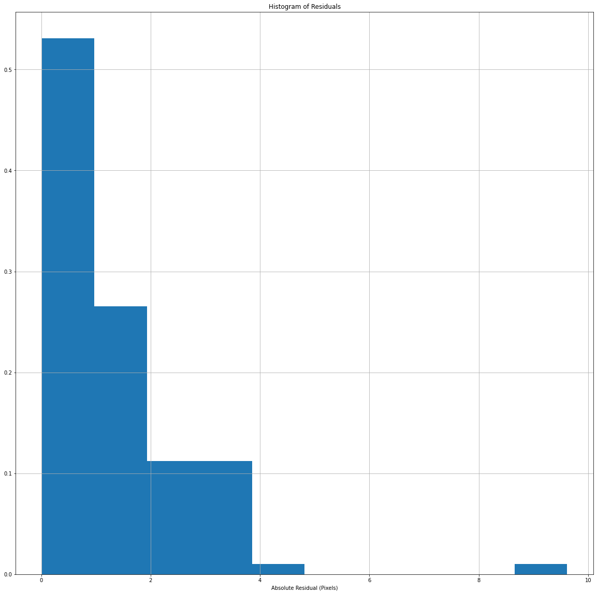
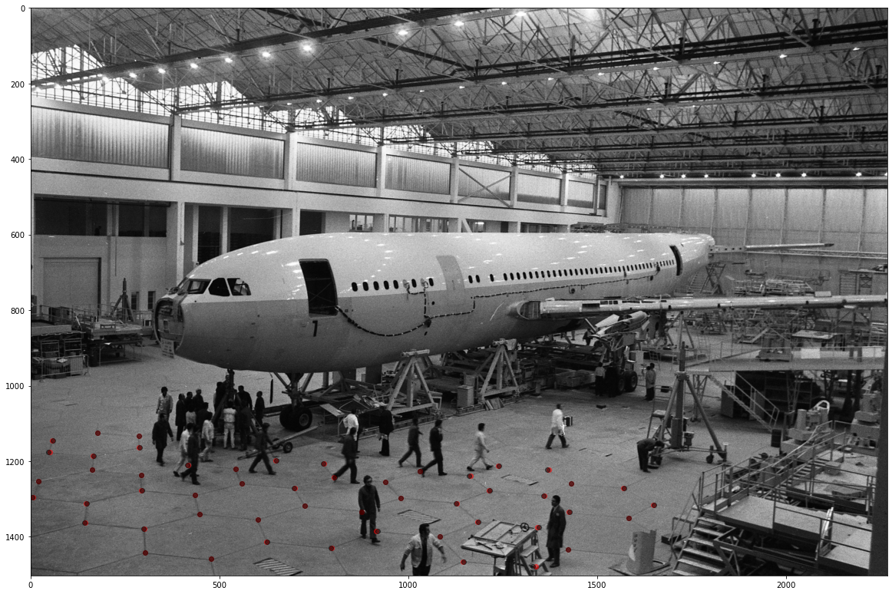
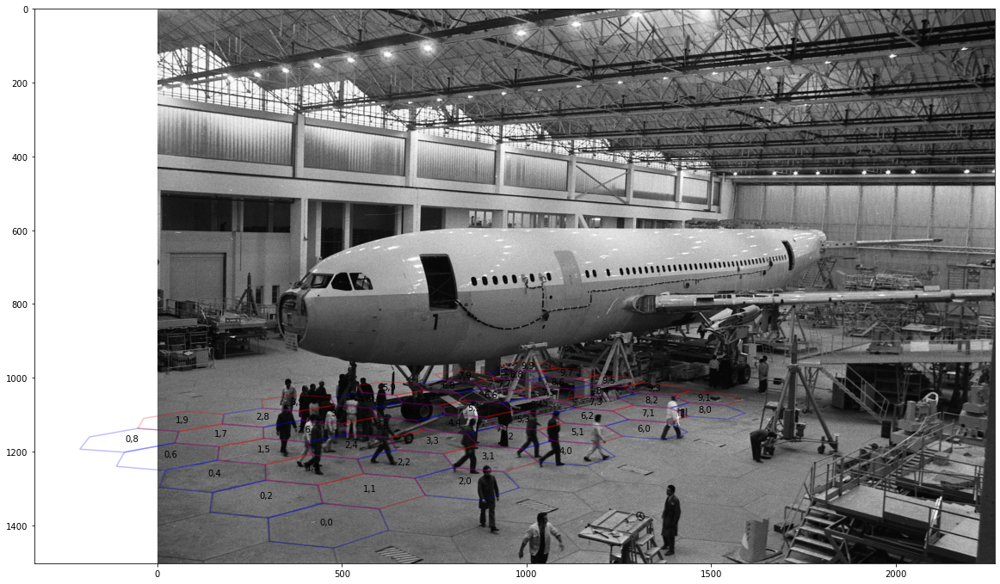

import json
import numpy as np
JSON = json.loads(open('data/2020-02-23-An-Adventure-In-Camera-Calibration/A300.json','r').read())
polygons = {}
for shape in JSON['shapes']:
coords = shape['label'].split(',')
x,y = int(coords[0]),int(coords[1])
polygons[x,y] = shape['points'] The Context
It’s February 1972; the A300 airliner is being unveiled in Toulouse; let’s go on an adventure (In-camera calibration!).
We have seen this photo published in a magazine, and we want to learn as much about the dimensions of Airbus’s new aircraft as possible. To do so, we will need to mathematically reconstruct the camera used to take the photo and the scene itself.
Control points
In this case, we are lucky because we notice the hexagonal pattern on the floor. In particular, it’s a tessellating hexagonal pattern, which can only happen if all the hexagons have identical dimensions.
While we don’t know the hexagon’s dimensions, each side is approximately 1.6m long, based on the height of the people in the photo. If we assume some point on the ground, say the centre of a polygon is the point 0,0, we can work out the X & Y location of each other polygon vertex we can see. Hence the Z coordinate of each point is 0. Furthermore, we could also assume that the factory floor is flat and level.
Let’s spend ±5 minutes annotating the image using an annotation tool like label me. I’ve generated a file, which you can find attached here:

Firstly, lets load in all of the x and y points:
Ok, now do some maths, and work out the locations of each vertex of our hexagons.
from sklearn.neighbors import KDTree
points = []
keys = sorted(polygons.keys())
for key in keys:
poly = polygons[key]
(pts_x, pts_y) = zip(*poly)
pts_x = list(pts_x)
pts_y = list(pts_y)
#Magic analytic formula for working out the location of each point, based on which vertex, of which polygon it is.
x_vertex = 0.5 * np.array([1,2,1,-1,-2,-1])
y_vertex = 0.5 * np.array([np.sqrt(3),0,-np.sqrt(3),-np.sqrt(3),0,np.sqrt(3)])
row,col = key
x = row * 1.5 + x_vertex
y = col * 0.5 * np.sqrt(3) + y_vertex
#From before, we assume the sides of each polygon is 1.6m
x*=1.6 #meters
y*=1.6 #meters
for idx in range(0,6):
point = []
i = pts_x[idx]
j = pts_y[idx]
X = x[idx]
Y = y[idx]
Z = 0.0
points.append([i,j,X,Y,Z])
Now we are presented with a minor problem; in many cases, we annotated the same point up to 3 times, where the vertices of the hexagons meet. So let’s go and find points that are within 10 pixels and then take their average. If we do this, we can effectively over-weight some points in the image at the expense of others.
points = np.asarray(points)
np.savetxt("data/2020-02-23-An-Adventure-In-Camera-Calibration/points.csv", points)
tree = KDTree(points[:,0:2], leaf_size=5)
merged_indicies = []
unique_points = []
for i in range(0,points.shape[0]):
if i not in merged_indicies:
dist, ind = tree.query(points[i,0:2].reshape(-1, 2), k=3)
indicies_to_merge = []
for j in range(0,3):
if dist[0][j]<10:
indicies_to_merge.append(ind[0][j])
merged_indicies.append(ind[0][j])
mean_points = np.mean(points[indicies_to_merge,:],axis=0)
unique_points.append(mean_points)
unique_points = np.asarray(unique_points)Camera Parameters
So, now we have many 3D points and corresponding 2D points in the photo.
Now it’s time to turn to the real magic, bundle adjustment. Our task is to find a camera that best fits our measured data.
Let’s talk more about cameras.
Important
There are many correct ways to model a camera mathematically. This is one way.
Mathematically, cameras are composed of two parameters, Intrinsic and Extrinsic. The Extrinsic parameters define the position and rotation of the camera with respect to the origin of the points it’s observing.
The Intrinsic parameters define the camera’s parameters, such as the Focal length, the location of the camera’s radial centre, and the distortion induced by the lens.
The Extrinsic parameters comprise 6 degrees of freedom, given our world is three-dimensional, and there are three dimensions to rotate around.
The Intrinsic parameters are more complex. There are some great resources, for example, Multiple View Geometry in Computer Vision or the OpenCV documentation. However, In this case, I am assuming that the principal point, the focal length, and the radial parameters are unknown.
Note
To be clear, I’m building on the shoulders of giants; I’ve heavily adapted this example from this incredible demo by Nikolay Mayorov which you can find here
First, let’s import a bunch of stuff we will need later.
from __future__ import print_function
from warnings import filterwarnings
filterwarnings('ignore')import numpy as np
import matplotlib.pyplot as plt
from scipy.optimize import least_squares
from scipy.spatial.transform import Rotation as Rot
%matplotlib inline
plt.rcParams["figure.figsize"] = (20,20)points_2d = unique_points[:,0:2]
points_3d = unique_points[:,2:5]
print('We have {} unique points'.format(points_2d.shape[0]))We have 51 unique pointsModelling the Camera
Intrinsic Matrix
Now we come to the real magic.
\[\begin{equation*} x = PX \end{equation*}\]
This function models the camera, taking points in 3D space and converting them into points in 2D space.
There are lots of things going on here.

Firstly, let’s talk about the camera’s intrinsic matrix.
It converts points from 3D space to 2D space.
\[\begin{equation*} K = \begin{bmatrix} f & 0 & c_{x} \\ 0 & f & c_{y} \\ 0 & 0 & 1 \end{bmatrix} \end{equation*}\]
We have the focal length, \(f\), and the camera optical centre \(c_x\) and \(c_y\).
Extrinsic Matrix
Now let’s talk about the camera’s extrinsic matrix.
The 6 degrees of freedom describe its position and orientation within the world. That’s 3 degrees for the position and 3 for the orientation. At its heart, what we are doing is simple but confusing.
There are so many ways to represent our setup: 1. Coordinate systems: 2D and 3D. * Left-Handed or Right Handed?
- Rotations:
- Quaternions?
- Proper Euler angles (6 different ways)?
- Tait–Bryan angles (6 different ways)?
- Rodrigues rotation formula?
- A rotation matrix?
- The location of the camera in the world. (2 Different ways).
Today, we will use two ways to represent the rotations: a Rodrigues rotation vector representation and a rotation matrix.
We use two different representations because it’s easier to optimise when we have 3 degrees of freedom than a naive rotation matrix with nine numbers representing 3 degrees of freedom.
R represents the camera’s orientation in the World Coordinate Frame (The frame we use to describe our 3D points).
In python, we can use convert from the Rodrigues rotation vector to the Rotation matrix as follows:
from scipy.spatial.transform import Rotation as Rot
rotation_vector = camera_params[:3]
R = Rot.from_rotvec(rotation_vector).as_matrix()\[\begin{equation*} R = \begin{bmatrix} R_1 & R_2 & R_3 \\ R_4 & R_5 & R_6 \\ R_7 & R_8 & R_9 \end{bmatrix} \end{equation*}\]
Now, let’s talk about the Project Matrix \(P\) of the camera. This takes the points from their location in 3D world coordinates to pixel coordinates, assuming we have a camera without radial distortion. There are two main ways this could be formulated.
Firstly: \[\begin{equation*} P = KR[I|−C] \end{equation*}\]
Secondly: \[\begin{equation*} P = K[R | t] \end{equation*}\]
Where \(t\) is: \[\begin{equation*} t = −RC \end{equation*}\]
Let’s go with the first method, where C is :
\[\begin{equation*} C = \begin{bmatrix} -C_X\\ -C_Y\\ -C_Z \end{bmatrix} \end{equation*}\]
Lens distortion
However, there is one subtlety alluded to before, which is the impact of radial distortion. The camera’s lens distorts the rays of light coming in, in a non-linear way.
We can model it using a Taylor series:
\[\begin{equation*} x_c = x(1 + k_1 r + k_2 r^2 + k_3 r^3) \end{equation*}\] \[\begin{equation*} y_c = y(1 + k_1 r + k_2 r^2 + k_3 r^3) \end{equation*}\]
In python, we end up with the following:
r = np.sqrt(np.sum(points_proj**2, axis=1)))
r = 1 + k1 \times r + k2 * r**2 + k3 * r**3
points_proj *= r[:, np.newaxis]Putting it all together
def project(points, camera_params):
"""Convert 3-D points to 2-D by projecting onto images."""
#Rotation
rotation_vector = camera_params[:3]
R = Rot.from_rotvec(rotation_vector).as_matrix()
#Camera Center
C = camera_params[3:6].reshape(3,1)
IC = np.hstack([np.eye(3),-C])
RIC = np.matmul(R,IC)
#Make points Homogeneous
points = np.hstack([points,np.ones((points.shape[0],1))])
#Perform Rotation and Translation
#(n,k), (k,m) -> (n,m)
points_proj = np.matmul(points,RIC.T)
#perspective divide
points_proj = points_proj[:, :2] / points_proj[:, 2, np.newaxis]
f = camera_params[6]
k1 = camera_params[7]
k2 = camera_params[8]
k3 = camera_params[9]
c_x = camera_params[10]
c_y = camera_params[11]
#Radial distortion
r = np.sqrt(np.sum(points_proj**2, axis=1))
x = points_proj[:,0]
y = points_proj[:,1]
points_proj[:,0] = (1 + k1 * r + k2 * r**2 + k3 * r**3)*x
points_proj[:,1] = (1 + k1 * r + k2 * r**2 + k3 * r**3)*y
#Make points Homogeneous
points_proj = np.hstack([points_proj, np.ones((points_proj.shape[0],1))])
K = np.asarray([[f, 0, c_x],
[0, f, c_y],
[0, 0, 1.0]])
points_proj = np.dot(points_proj,K.T)
points_proj = points_proj[:,:2]
return(points_proj)Initial Parameters
Let’s start by providing hints to the optimiser about the solution by putting in some reasonable starting conditions.
We know both the image width and height, and we can assume that the principal point is in the centre of the image.
The camera is about 10 meters off the ground.
Let’s rotate the camera, so it faces directly down to make optimisation easier. This means that the points should be in front of/below it.
Let’s also assume that the camera is centred above the points. It’s not strictly correct, based on what we see in the image, but it’s not horrifically wrong.
image_width = 2251
image_height = 1508
estimated_focal_length_px = 2000
camera_params = np.zeros(12)
r = Rot.from_euler('x', 180, degrees=True).as_rotvec()
#Rotation matrix
camera_params[0] = r[0]
camera_params[1] = r[1]
camera_params[2] = r[2]
#C
camera_params[3] = points_3d[:,0].mean()
camera_params[4] = points_3d[:,1].mean()
camera_params[5] = 10
#f,k1,k2,
camera_params[6] = estimated_focal_length_px
camera_params[7] = 0
camera_params[8] = 0
camera_params[9] = 0
#c_x,c_y
camera_params[10] = image_width/2.0
camera_params[11] = image_height/2.0Optimisation
This section below is well explained by here.
We are optimising to minimise a geometric error, that is, the distance between the 2D points we see and the projection of their 3D counterparts.
Through optimisation, we aim to find parameters that result in a low error, which means they should represent the actual parameters of the camera.
def fun(camera_params, points_2d, points_3d):
#Compute residuals.
points_proj = project(points_3d, camera_params)
return(points_proj - points_2d).ravel()x0 = camera_params.ravel()
optimization_results = least_squares(fun, x0, verbose=1, x_scale='jac', ftol=1e-4, method='lm',
loss='linear',args=(points_2d, points_3d))`ftol` termination condition is satisfied.
Function evaluations 970, initial cost 3.7406e+07, final cost 1.7398e+02, first-order optimality 3.63e+03.Results
Now let’s go and check out the results of our optimization process.
camera_params = optimization_results.x
R_Rodrigues = camera_params[0:3]
C = camera_params[3:6]
r = Rot.from_rotvec(R_Rodrigues)
R_matrix = r.as_matrix()
r = Rot.from_matrix(R_matrix.T)
R_Quaternion = r.as_quat()
print('Quaternions: X: {:.3f} Y: {:.3f} Z: {:.3f} W: {:.3f} '.format(R_Quaternion[0],R_Quaternion[1],R_Quaternion[2],R_Quaternion[3]))
print('Camera position relative to the origin in (M): X: {:.2f}, Y: {:.2f}, Z: {:.2f}'.format(C[0],C[1],C[2]))
focal_length_px = camera_params[6]
k1 = camera_params[7]
k2 = camera_params[8]
k3 = camera_params[9]
c_x = camera_params[10]
c_y = camera_params[11]
print('Focal length (Pixels): {:.2f}'.format(focal_length_px))
print('CX, CY: {:.2f} {:.2f}'.format(c_x,c_y))
print('K_1, K_2, K_3 : {:.6f}, {:.6f}, {:.6f}'.format(k1,k2,k3))
print('Mean error per point: {:.2f} pixels '.format(optimization_results.cost/points_2d.shape[0]))Quaternions: X: 0.894 Y: -0.408 Z: 0.084 W: -0.166
Camera position relative to the origin in (M): X: -6.85, Y: -12.92, Z: 2.75
Focal length (Pixels): 1010.93
CX, CY: 1038.58 2663.52
K_1, K_2, K_3 : -0.327041, 0.175031, -0.030751
Mean error per point: 3.41 pixels Ok, the mean error per point is 3-4 pixels. We have found a decent solution; however, some interesting things are happening.
In particular, the principal point lies outside the image, which is curious. One possibility is that the image was cropped.
Now let’s have a quick look at the errors for each point.
plt.hist(abs(optimization_results.fun),density=True)
plt.title('Histogram of Residuals')
plt.xlabel('Absolute Residual (Pixels)')
plt.grid()
plt.show()
So the histogram looks pretty good, apart from the one point with a high residual, probably due to sloppy labelling/annotation.
Now let’s compare the points we annotated, with where they would be projected, using the camera parameters we found:
points_2d_proj = project(points_3d, optimization_results.x)
img = plt.imread('data/2020-02-23-An-Adventure-In-Camera-Calibration/A300.jpg')
plt.imshow(img)
plt.scatter(points_2d[:,0],points_2d[:,1],label='Actual',c='r',alpha=0.5)
plt.scatter(points_2d_proj[:,0],points_2d[:,1],label='Optimised',c='k',alpha=0.5)
plt.show()
Again, this looks great. Finally, let’s overlay the hexagons on the floor, to build confidence in our solution visually.
def plot_verticies(row,col):
x_vertex = 0.5 * np.array([1,2,1,-1,-2,-1,1])
y_vertex = 0.5 * np.array([np.sqrt(3),0,-np.sqrt(3),-np.sqrt(3),0,np.sqrt(3),np.sqrt(3)])
x = row * 1.5 + x_vertex
y = col * 0.5 * np.sqrt(3) + y_vertex
x*=1.6
y*=1.6
points_3d = np.vstack([x,y,np.zeros(7)]).T
points_2d_proj = project(points_3d, optimization_results.x)
return(points_2d_proj)
plt.imshow(img)
for row in range(0,10,2):
for col in range(0,10,2):
points_2d_proj = plot_verticies(row,col)
plt.plot(points_2d_proj[:,0],points_2d_proj[:,1],color='B',alpha=0.25)
plt.text(np.mean(points_2d_proj[:,0]), np.mean(points_2d_proj[:,1]), str(row)+','+str(col), horizontalalignment='center',verticalalignment='center')
for row in range(1,11,2):
for col in range(1,11,2):
points_2d_proj = plot_verticies(row,col)
plt.plot(points_2d_proj[:,0],points_2d_proj[:,1],color='R',alpha=0.25)
plt.text(np.mean(points_2d_proj[:,0]), np.mean(points_2d_proj[:,1]), str(row)+','+str(col), horizontalalignment='center',verticalalignment='center')
plt.show()
In Conclusion
We have found a semi-reasonable solution.
However, I need to figure out the location of the principal point of the image. Usually, this is near the centre of the image with most cameras. In our case, it isn’t. There are several reasons why this could be the case; for example, the image might have been cropped; however, it’s a little concerning.
I’m also worried about the camera’s height, only 2.75M above the ground. The camera looks approximately the same height as the aircraft’s roof, which is 7-10m above the ground.
In the future, Let’s look at how we can extract more useful information from this image and understand how confident we can be in our solution.
Thanks to Nikolay Mayorov who created the excellent optimisation demo in Scipy that I built upon, you can find the original code here.
Multiple View Geometry in Computer Vision is an incredible book that I learn more from each time I read it. in particular, for further information, see:
- Finite cameras. Page 153, Multiple View Geometry in Computer Vision (Second edition)
- Note: Minimizing geometric error. Page 176, Multiple View Geometry in Computer Vision (Second edition)